O placar dizia uma coisa…
Primeira leitura, ainda à mão, pelo print do UOL: Flávio 51,1% x Lula 40,7%. Se terminasse assim, não haveria 2º turno.
Mas o placar dependia de onde as urnas já tinham sido contadas: o Paraná tinha ~39% apurado; Bahia, São Paulo e Rio, menos de 5%.
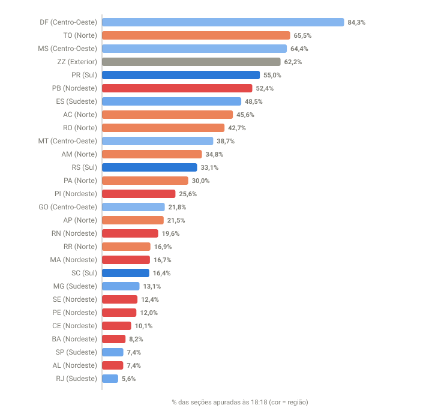


Case 01 · O placar parcial não é o resultado
…e a projeção, outra
Em cinco minutos, troquei os prints pela fonte oficial: os arquivos do TSE, consultados a cada 3 minutos. O trecho pontilhado do gráfico é esse intervalo, enquanto eu montava a coleta.
Na primeira coleta, projetei cada estado pelo que já tinha sido apurado nele. Resultado: Flávio 49,0%, abaixo dos 50%. Era 2º turno, 2h39 antes da confirmação oficial.
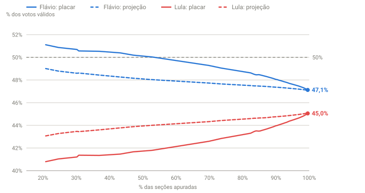
Cases 02 e 03 · A fonte oficial e a projeção
O lote que virou a tendência
Para vencer no 1º turno, o Flávio precisava de 49,7% dos votos que ainda faltavam. Até as 18h41 ele vinha nessa faixa. O lote das 18h46 deu 48,1%, e nenhum lote relevante voltou a passar da linha.
No caminho, achei um erro no meu próprio cálculo: eu misturava dois arquivos do TSE e o % de urnas saía inflado. Como tinha guardado os dados originais, recalculei tudo em minutos.
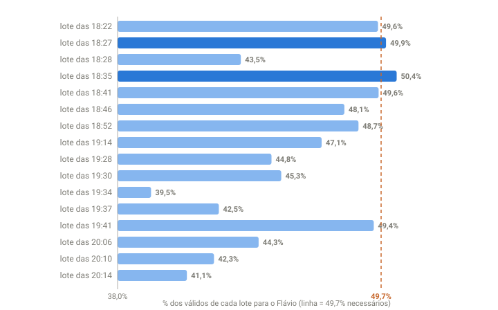
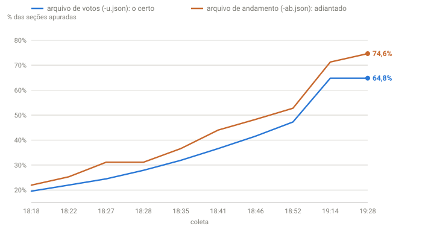
Cases 04 e 05
Meu primeiro palpite: 47 x 42
Pelo gráfico do UOL que compara 2026 com 2022, apostei que o Flávio cairia para 47%.
Para o Lula, cravei 42% porque esperava mais votos para Cury, Renan Santos e Caiado: 47 + 42 deixava 11% para os outros. Eles terminaram com 7,8%, e essa diferença acabou indo para o Lula. O Flávio, acertei.
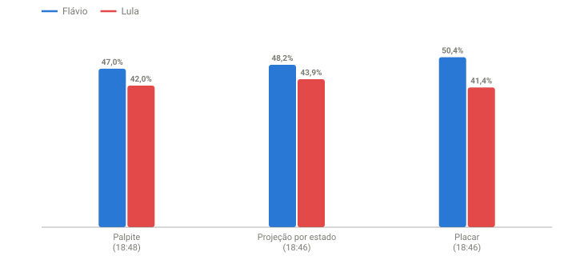

Case 06 · Meu palpite
25 minutos de silêncio, depois 20 milhões de votos
O TSE parou de publicar e voltou com o maior lote da noite. O Flávio caiu abaixo de 50% pela primeira vez.
Detalhe curioso: esse lote deu 431 mil votos a mais para ele, mas com margem menor que a média dele, por isso derrubou o percentual. A partir daí, quase todo lote deu saldo ao Lula.
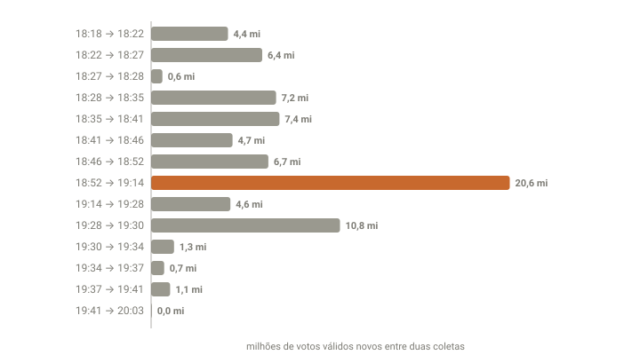
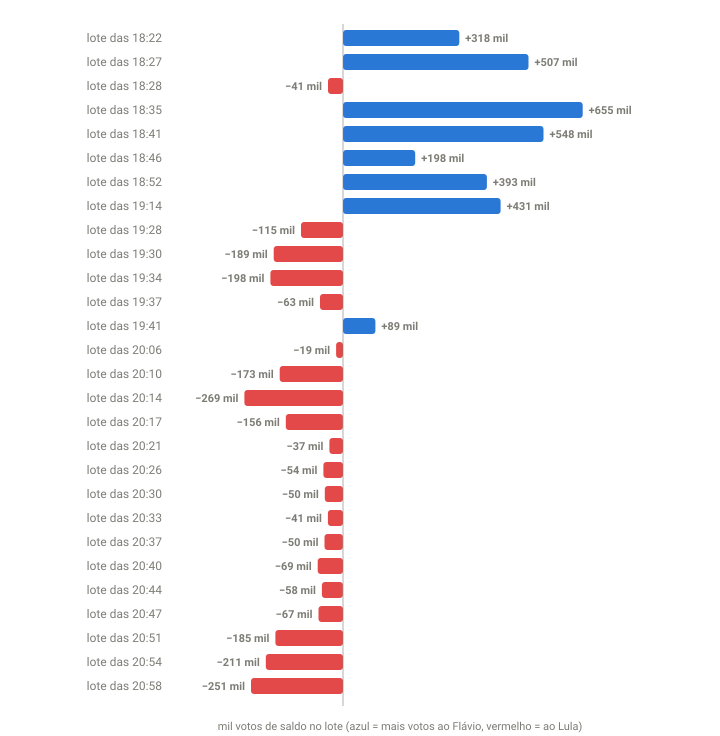
Cases 07, 08 e 09
Os estados andam na frente
O arquivo nacional do TSE ficou 50 minutos parado, enquanto os estados continuavam publicando.
Passei a somar os 27 estados e o exterior. Por quase uma hora, eu via a apuração ~20 pontos à frente do que os grandes portais mostravam.
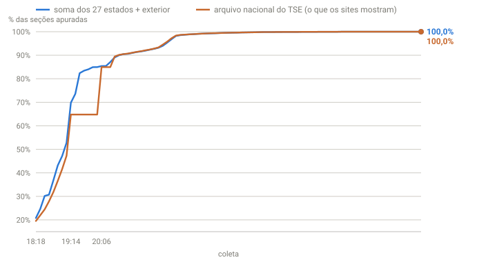
Case 10
O voto tardio é diferente
Até em São Paulo, os últimos votos vieram menos favoráveis ao Flávio que os primeiros. A projeção por estado errava sempre para o mesmo lado: note como a linha tracejada fica acima do resultado o tempo todo.
Corrigi o método usando a tendência dos lotes mais recentes. No fim, o viés somou ~1,9 milhão de votos.
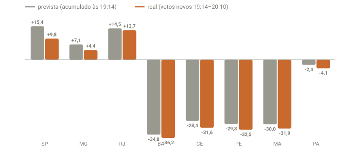
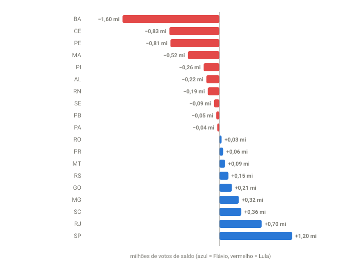

Cases 11 e 12
Palpite ajustado: 47 x 44
Revisei a premissa sobre os outros candidatos e ajustei o palpite para 47 x 44. As projeções davam ~47,3 x ~44,8.
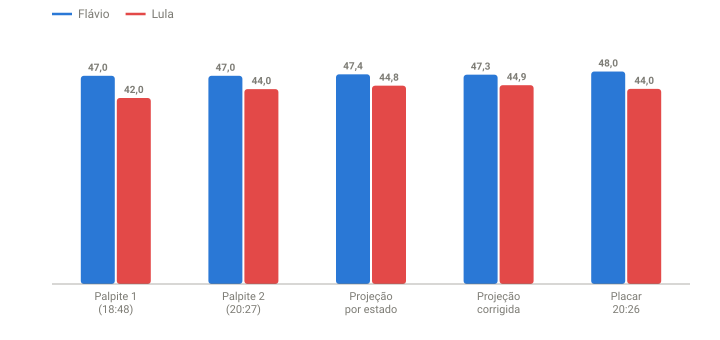

Case 13
Toda apuração começa com o mesmo viés
Transcrevi a apuração minuto a minuto do 2º turno de 2018 e comparei com os dois turnos de 2022. Em todas, quem é mais forte no Sul e no Sudeste começa à frente e perde terreno quando o Nordeste entra.
Aplicando a reta final de cada eleição a 2026, o Flávio terminaria entre +1,7 e +3,4 pontos. Terminou com +1,87: o método mais simples foi o mais preciso da noite.
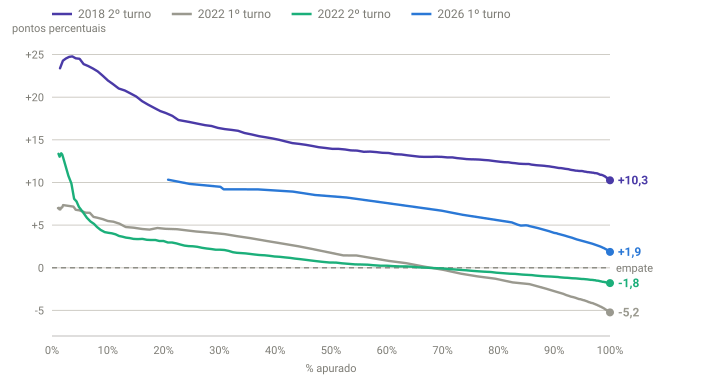
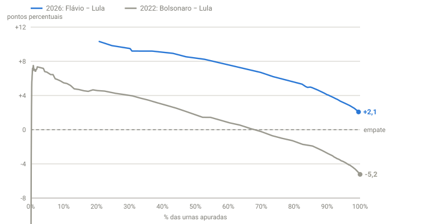

Cases 14 e 15
Favorito, mas por pouco
O líder do 1º turno venceu os seis 2º turnos desde 2002, mas em cinco o 2º colocado ganhou mais votos entre os turnos.
E Minas, que acertou o vencedor em todos os turnos desde 2002, deu o Flávio na frente (48,2 x 43,3 no final).
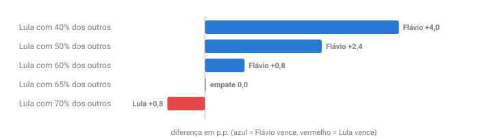
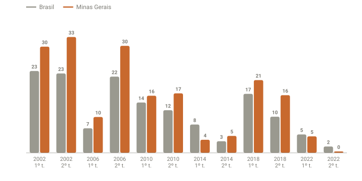

Cases 16, 17 e 18
Está confirmado: vai ter 2º turno
O TSE marcou a eleição como matematicamente definida. A projeção por estado dizia isso desde as 18h18, duas horas e 39 minutos antes.
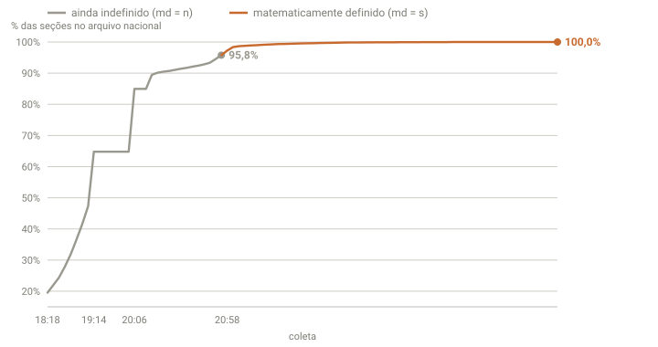
Case 19
Ainda dá para chegar a 46 x 45?
Não. Mesmo se todos os votos restantes fossem para o Lula, o Flávio não cairia abaixo de 46,85%. Faltavam ~760 mil votos, a maioria na Bahia, em Minas e no Ceará.
Previsão às 21h32: 47,09 x 45,09. Final: 47,03 x 45,16.
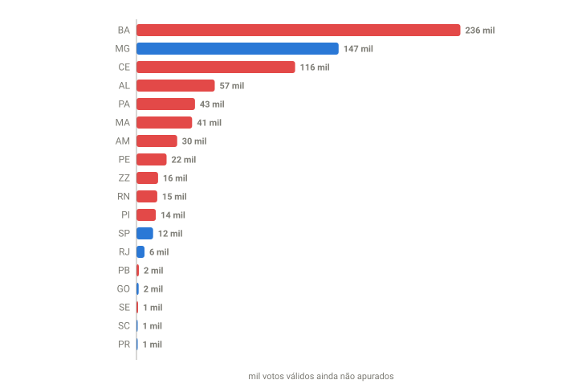
Case 20 · Reta final
Flávio x Lula no 2º turno
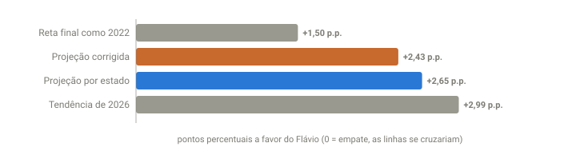
- O placar parcial superestimou o líder em 4 pontos (51,1% às 18h18); a projeção por estado, em 2.
- Somar os estados deu um placar até ~20 pontos de apuração à frente do que os portais mostravam.
- O voto apurado por último foi diferente dentro de cada estado: a projeção errou ~1,9 milhão de votos, sempre para o mesmo lado.
- O método mais simples foi o mais preciso: a reta final de 2022 estimou +1,5 ponto de diferença; o real foi +1,87.
- Meus palpites: acertei o Flávio duas vezes (47%). No Lula, 42 → 44 → 45,16 real: eu superestimei os outros candidatos.
- Guardar o dado bruto salvou a noite duas vezes: todo erro de cálculo pôde ser refeito.